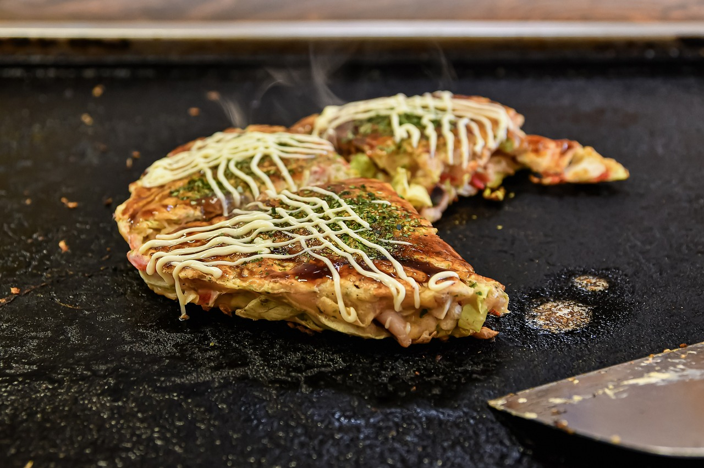
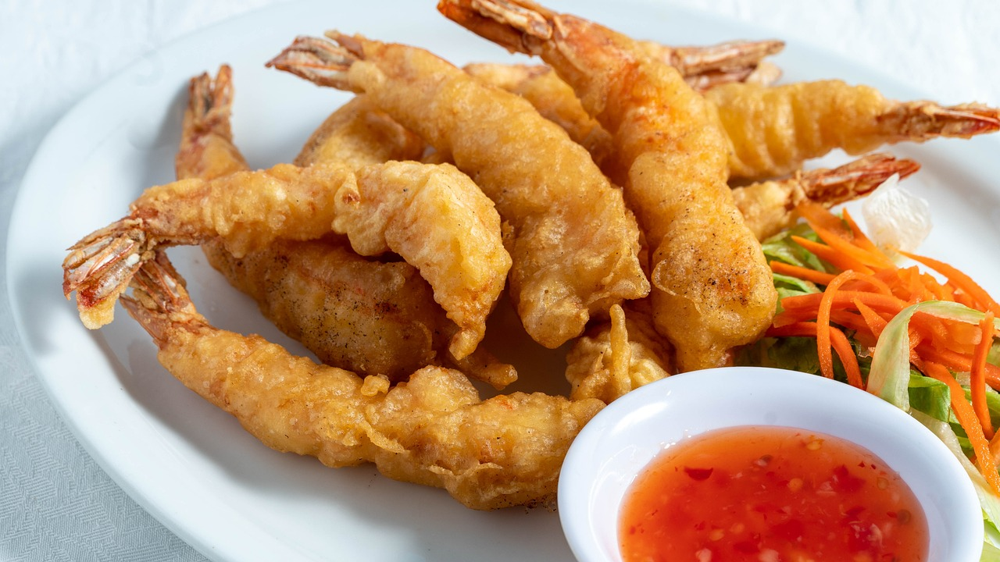
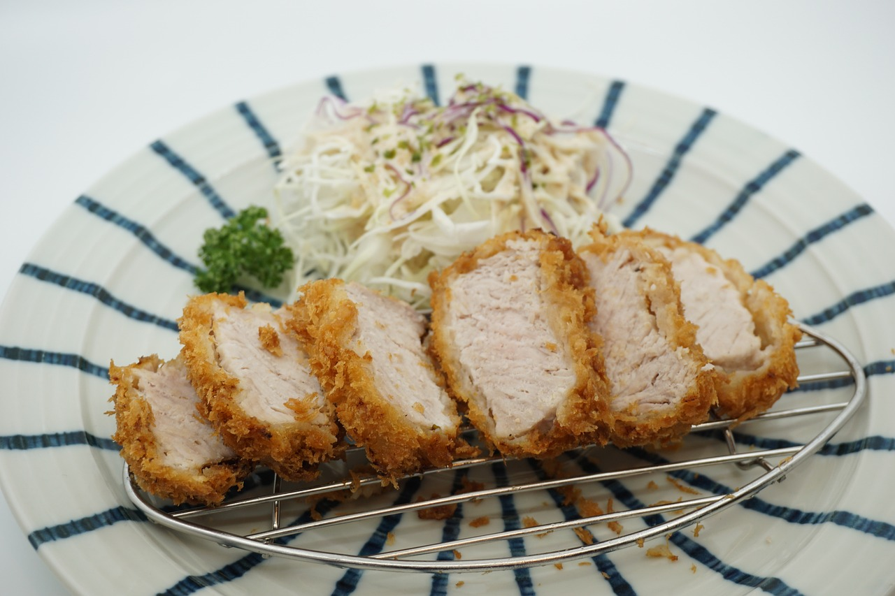

Exploring Japan's Culinary Treasures: Delve into the Delights of Traditional and Delicious Japanese Cuisine!
Sushi

When you travel to Japan and go on a gastronomic excursion, you will surely come across sushi, one of the country's most well-known and iconic foods. Food lovers all around the world have been enthralled with this magnificent culinary creation, which is distinguished by its subtle flavors, flawless presentation, and skilled craftsmanship. Come explore the history, preparation, and enticing appeal of sushi with us.
A Brief History
The history of sushi is lengthy and illustrious, going all the way back to ancient Japan. Sushi was first created as a way to preserve fish by fermenting it with rice and salt. Over time, however, it matured into the complex art form that it is today. Nigiri sushi, which is a visually appealing and delectable dish made from raw fish slices on bite-sized mounds of vinegared rice, first appeared during the Edo era (1603–1868).
The Art of Making Sushi
Sushi is fundamentally a complex balancing act of flavors, textures, and scents, painstakingly prepared by expert chefs, or itamae. Sushi is mostly made of vinegared rice, fresh fish, and a variety of toppings like seaweed, veggies, and sauces.
The first step in making sushi is for the itamae to choose the best ingredients, making sure that every piece is delicious, fresh, and of the greatest caliber. A blend of sugar, salt, and rice vinegar is used to season the rice, giving it a little tang that complements the flavor of the fish.
Freshness, texture, and flavor are all taken into consideration when slicing the fish with meticulous attention to detail. Then, each slice is expertly positioned on a mound of rice that has been vinegared and manually formed into bite-sized pieces known as nigiri sushi. As an alternative, maki sushi, or rolled sushi, can be made by rolling the fish, rice, and additional contents inside a sheet of seaweed.
Varieties of Sushi
There are many regional varieties and inventive modifications to try, even though the traditional nigiri and maki sushi are still perennial favorites. To whet your appetite, try these well-liked varieties:
- Nigiri Sushi: Known for its little mounds of vinegared rice topped with raw fish slices (such as yellowtail, salmon, or tuna), sushi nigiris are arguably the most iconic type of sushi. Nigiri sushi is a favorite among sushi aficionados because of its simplicity, which lets the flavor and freshness of the fish shine through.
- Maki Sushi: Also known as rolled sushi, maki sushi is prepared by rolling rice, fish, and additional toppings between sheets of nori seaweed, then cutting the mixture into bite-sized pieces. Maki sushi is available in a range of sizes and forms, from little futomaki rolls packed with different fillings to gigantic hosomaki rolls.
- Sashimi: Although not strictly a sushi, sashimi is frequently served with sushi and has a lot in common with it. Raw fish that has been thinly sliced and is usually served without rice with pickled ginger, wasabi, and soy sauce. Sashimi's purity lets customers enjoy the taste and texture of the fish to the fullest.
- Chirashi Sushi: Also referred to as dispersed sushi, this dish is composed of a bowl of rice that has been vinegared and is topped with a variety of sashimi, veggies, and other garnishes. It is bright and colorful. Sushi connoisseurs love chimicashi sushi because it's so versatile and easy to customize.
Savoring the Flavors of Sushi
A trip through Japanese cuisine wouldn't be complete without sampling sushi's delectable flavors. Sushi, whether at a noisy sushi bar, a traditional sushiya (sushi restaurant), or a neighborhood fish market, satisfies the palate with its vibrant tastes, excellent presentation, and deft craftsmanship. Sushi draws people together to share in the joy of delicious cuisine and wonderful company, whether they are in the busy streets of Tokyo or the peaceful fishing villages of Hokkaido.
So make sure to indulge your taste buds with the wonders of sushi the next time you visit Japan. Enjoying the traditional nigiri, trying creative maki rolls, or tasting the unadulterated purity of sashimi will guarantee that your gastronomic experience is nothing short of remarkable.
Savor the exquisite craft of sushi making and discover Japan's extensive culinary legacy, one mouthwatering taste at a time.
Okonomiyaki

When you go through Japan's food landscape, you'll come across okonomiyaki, one of the country's most well-known and adored meals. This savory pancake, also known as "Japanese pizza" or "Japanese savory pancake," has won over the palates and hearts of foodies everywhere by providing a delicious fusion of tastes, textures, and scents. Come explore the history, preparation, and enticing appeal of Okonomiyaki.
A Brief History
The birthplaces of okonomiyaki are Osaka and Hiroshima, two Japanese cities renowned for their thriving culinary cultures. From its modest beginnings as a working-class favorite street food, the meal has developed into a well-liked comfort food that appeals to a wide range of age groups and socioeconomic backgrounds. Nowadays, okonomiyaki is regarded as a traditional Japanese meal that embodies the nation's rich culinary history and cultural customs.
The Art of Making Okonomiyaki
Fundamentally, okonomiyaki is a savory pancake consisting of a mixture of flour, eggs, shredded cabbage, and additional toppings including noodles, pork, veggies, and seafood. "Okonomi" means "what you like" or "what you want," which reflects how adaptable and adjustable this dish is.
In order to make Okonomiyaki, combine the batter with the required ingredients and cook over a hot pan or griddle until the outside is crispy and golden brown and the center is still fluffy and tender. A generous sprinkling of savory Okonomiyaki sauce, mayonnaise, dried seaweed flakes, and bonito flakes are then added to the pancake, making for an incredibly beautiful and mouthwatering dish.
Varieties of Okonomiyaki
There are many regional variations and inventive adaptations to try, even though the traditional Okonomiyaki is still a perennial favorite. To whet your appetite, try these well-liked varieties:
- Osaka-style Okonomiyaki: In the Osaka manner Osaka-style okonomiyaki The most classic and well-known variation of the meal is okonomiyaki. It has several contents, including octopus, shrimp, squid, and pork belly, and is created with a batter consisting of flour, eggs, and shredded cabbage. The pancake is griddle-cooked and garnished with bonito flakes, mayonnaise, dried seaweed flakes, and okonomiyaki sauce.
- Hiroshima-style Okonomiyaki: Like Hiroshima Hiroshima-style okonomiyaki A special kind called okonomiyaki has its origins in Hiroshima. It is made up of layers of foods like shellfish, noodles, pork belly, and cabbage that are fried on a griddle until crispy and golden brown. The pancake is then topped with bonito flakes, mayonnaise, and okonomiyaki sauce, making for a filling and substantial meal.
- Modan-yaki: Also referred to as "modern-yaki," modan-yaki is a modern twist on Okonomiyaki that uses cheese, bacon, and sausage, among other foods from the West. This version of the dish is rich and luscious, making it ideal for individuals seeking comfort food with a Japanese influence.
- Negiyaki: The batter for negiyaki has a higher proportion of green onions to cabbage than that of okonomiyaki, making it lighter and more delicate. This dish is aromatic, tasty, and fresh because the pancake is cooked till golden brown and crispy, covered with a savory soy-based sauce, and served with thinly sliced green onions.
Savoring the Flavors of Okonomiyaki
A trip through Japanese cuisine wouldn't be complete without sampling okonomiyaki. The crunchy texture, savory contents, and umami-rich toppings of Okonomiyaki thrill the senses whether it is consumed at a neighborhood festival, a traditional restaurant, or a food cart. Okonomiyaki is a dish that unites people to enjoy the joys of delicious food and wonderful companionship, whether they are in the peaceful neighborhoods of Hiroshima or the busy streets of Osaka.
So make sure to indulge your taste buds with the enchantment of okonomiyaki the next time you're in Japan. Eating the traditional version or experimenting with creative twists, one thing is certain: your gastronomic adventure will be nothing short of remarkable.
Savor the savory thrill of okonomiyaki and discover Japan's rich culinary history with each mouthwatering bite.
Tempura

When you go on a culinary tour of Japan, you will surely come across tempura, one of the country's most well-known and cherished delicacies. With a delicious blend of textures, flavors, and scents, this crispy and light batter-fried delicacy has captured the hearts and palates of food fans worldwide. Come explore the history, preparation, and seductive appeal of tempura with us.
A Brief History
The origins of tempura can be traced to Portuguese missionaries who taught Japanese cooks the art of batter-frying in the sixteenth century. Over time, the meal changed as local flavors and ingredients were added by Japanese cooks, giving rise to a distinctively Japanese take on fried food. Tempura is now recognized as the traditional dish of Japan, a reflection of the nation's rich cultural traditions and culinary legacy.
The Art of Making Tempura
Basically, tempura is just lightly battered and fried seafood, veggies, or other ingredients. It's a simple yet delicious dish. A combination of flour, water, and occasionally egg is used to make the batter, which results in a light and fluffy coating that fries to a gorgeous crisp.
The components for tempura are swiftly deep-fried in hot oil till they get golden brown and crisp after being dipped in batter. Achieving the ideal ratio of lightness to crispiness is crucial for creating the perfect tempura, since the batter should create a light and fluffy shell that perfectly encases the soft insides of the contents.
Varieties of Tempura
Although shrimp or fish are usually used in the traditional Tempura, there are many other inventive versions that can be tried. To whet your appetite, try these well-liked varieties:
- Shrimp Tempura: This is arguably the most recognizable and iconic type of the meal. It has big, juicy shrimp that are deep-fried until crispy and golden brown after being dipped in tempura batter. A dipping sauce consisting of soy sauce, mirin, and dashi is frequently offered with the shrimp, which enhances the flavor of each bite.
- Vegetable Tempura: This version is softer and more delicate, using a range of vegetables such sweet potatoes, eggplant, bell peppers, and mushrooms. Thinly sliced veggies are deep-fried till crisp and tender after being dipped in tempura batter. Served as an appetizer or side dish, vegetable tempura brings flavor and color to any meal.
- Mixed Tempura: Mixed tempura is a well-liked choice that consists of a variety of seafood, veggies, and occasionally tofu or cheese. It's a tasty and filling dish that's ideal for sharing. The combination of ingredients is coated in Tempura batter and fried together till golden brown and crispy.
- Anago Tempura: Sea eel, or anago, is delicate and soft. It is dipped in tempura batter and deep-fried until the outside is crispy and the inside is still soft. This is the upscale version of anago tempura. Anago tempura is frequently served with a drizzle of salty and sweet sauce, which gives the meal more flavor and depth.
Savoring the Flavors of Tempura
A trip through Japanese cuisine wouldn't be complete without sampling tempura's delectable flavors. Enjoyed at a busy street food stand, a traditional Tempura restaurant, or a local festival, Tempura entices the senses with its delicate flavors, crispy texture, and skillful craftsmanship. Tempura brings people together to share in the joy of delicious cuisine and wonderful company, whether they are in the peaceful countryside of Kyoto or the busy streets of Tokyo.
Thus, make sure to indulge your taste buds with the crispy bliss of tempura the next time you find yourself in Japan. Whether you choose to enjoy inventive vegetable versions, the traditional shrimp tempura, or the delicate flavors of the Anago Tempura, one thing is for sure: your gastronomic adventure will be nothing short of remarkable.
Savor the crunchy joy of tempura and discover Japan's extensive culinary history with each mouthwatering bite.
Tonkatsu

If you take a culinary tour of Japan, you will surely come across tonkatsu, one of the country's most well-known and adored delicacies. A delicious combination of textures, smells, and fragrances, this crispy and tasty breaded pork cutlet has captured the hearts and palates of food fans worldwide. Come explore the history, preparation, and enticing appeal of Tonkatsu with us.
A Brief History
The Meiji period in Japan in the late 19th century is when tonkatsu first appeared. It is thought to have been influenced by Western food, especially fried and breaded foods from Europe like schnitzel. Because of its crispy outside and juicy, soft inside, tonkatsu swiftly became a mainstay of Japanese cuisine in Japan.
The Art of Making Tonkatsu
Fundamentally, tonkatsu is a straightforward but delicious meal composed of breaded and deep-fried pork cutlets. Choosing the appropriate pig cut, usually from the loin or fillet, and cooking it with care and precision are the keys to making the best tonkatsu.
The pork cutlets are first made more soft by pressing them to a consistent thickness using a meat mallet before making Tonkatsu. They are then fried in flour, dipped in beaten eggs, seasoned with salt and pepper, and finally fried in breadcrumbs. After that, the breaded cutlets are deep-fried in heated oil until they are crispy and golden brown on the exterior but still juicy and soft inside.
Varieties of Tonkatsu
Though breaded and fried pork cutlets are the traditional ingredients of the basic Tonkatsu, there are many inventive versions to try. To whet your appetite, try these well-liked varieties:
- Rosu Katsu: Pork loin cutlet, or Rosu Katsu, is one of the most popular Tonkatsu varieties. It has thick slices of breaded, deep-fried pig loin until golden brown and crispy. Tonkatsu aficionados love Rosu Katsu because of its succulent, juicy inside and crispy, delicious outside.
- Hire Katsu: Another well-liked version, Hire Katsu is pork fillet cutlet, which consists of soft pork fillet slices that are breaded, fried, and crisp. Hire Katsu is a lighter option to Rosu Katsu because of its soft, lean beef.
- Katsu Curry: Served with rice and Japanese curry sauce, Katsu Curry is a delectable take on tonkatsu that has a crispy pork cutlet. Crispy tonkatsu mixed with savory curry sauce makes for a filling and tasty dish that's ideal for a cold day's warmth.
- Ebi Katsu: Featuring breaded and fried shrimp in place of pork, Ebi Katsu is a tempting variant for seafood aficionados. The breadcrumb-coated shrimp have a wonderfully crunchy outside and a tender within after being deep-fried until crispy and golden brown.
Savoring the Flavors of Tonkatsu
A trip through Japanese cuisine wouldn't be complete without indulging in tonkatsu. To be savored in a neighborhood izakaya, a busy street food stand, or a traditional Tonkatsu restaurant, Tonkatsu satisfies the palate with its crispy texture, juicy meat, and delicious spices. Tonkatsu is a social gathering place that unites people to enjoy delicious cuisine and wonderful company, whether they are in the busy streets of Tokyo or the tranquil countryside of Kyoto.
Thus, make sure to indulge your taste buds with the crispy deliciousness of Tonkatsu the next time you find yourself in Japan. Enjoying the traditional Rosu Katsu, trying out creative takes, or sinking your teeth into Katsu Curry—there's no doubt that your gastronomic adventure will be nothing short of remarkable.
Savor the crispy deliciousness of Tonkatsu and discover Japan's rich culinary history with each mouthwatering bite.